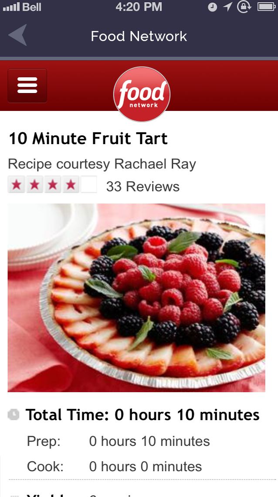
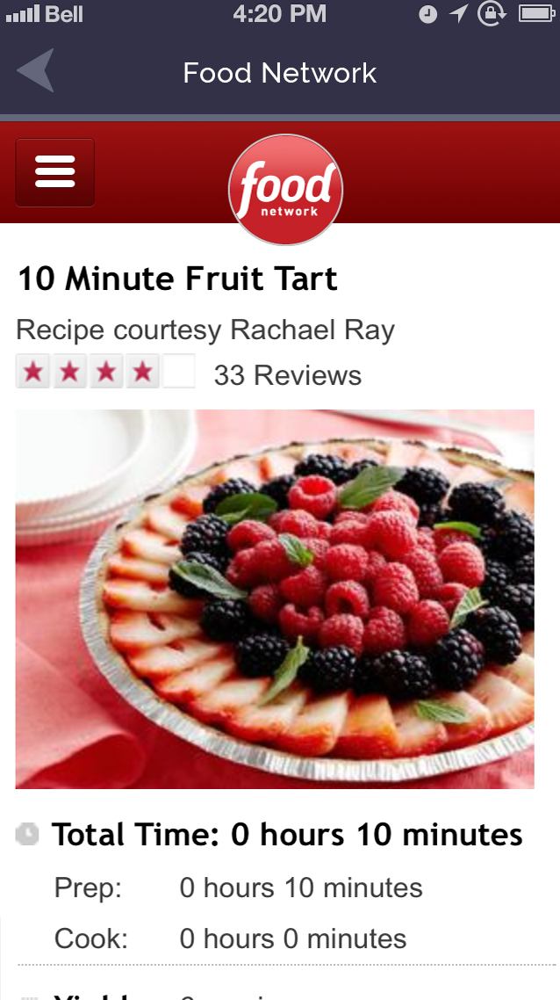

User Experience Design for a recipes app

While at Mindspark I was the UX & Design lead for a project called Almost Cooked. Our team performed research for a website and companion app that combines recipe search and meal planning. While the project never reached production, I am proud of the progress we made and the valuable insights we gained during our user research.
Our research process included a series of phone interviews and a survey of current recipe websites, grocery shopping patterns, and diet trends. Based on our research we developed user personas and created a storyboard.


After collecting research we developed a visual language for the interface. We picked a warm color palette and bold shapes inspired by vintage cookbooks.


Along with the website, we designed a companion app for iOS.
 
